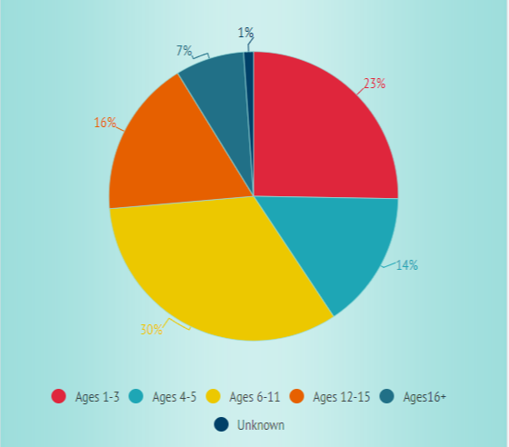
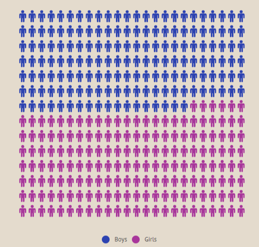
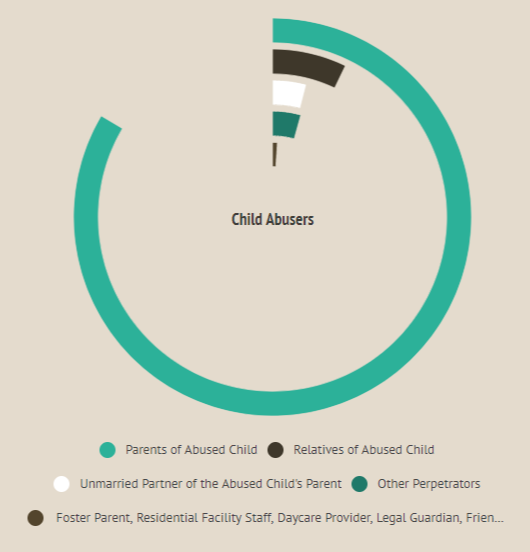
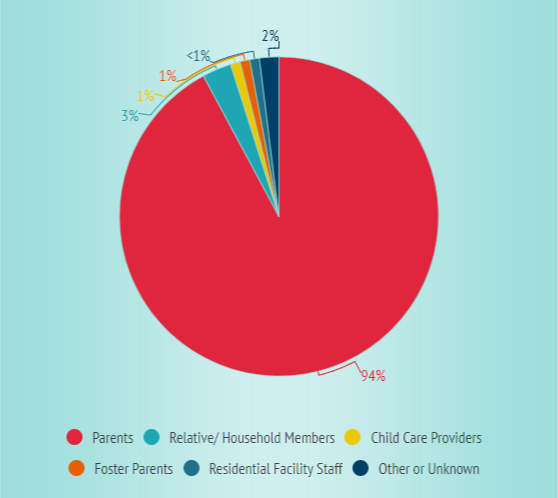
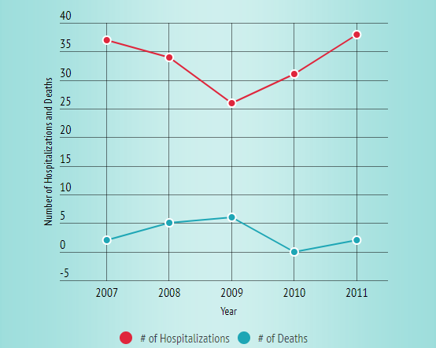
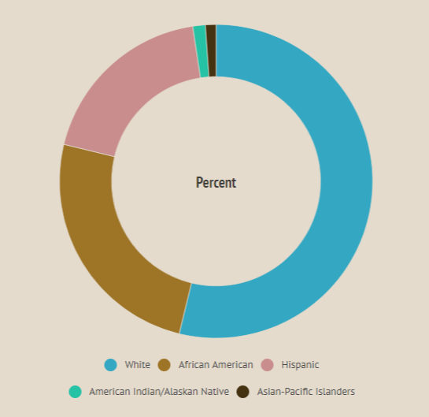
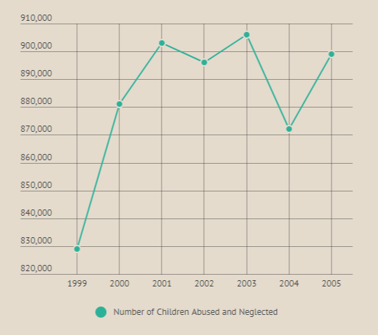

This Pie Chart shows us the different types of Child Abuse that are used very often.

This Pie Chart shows the various ages of victims that have been abused or neglected.

This Pie Chart shows us that 47.3 percent of child victims are male and 50.7 are female.

This Pie Chart shows us that 79.4% of child abusers are the child's own parents.

This Pie Chart shows the different relationships between the victims and the perpetrators.

This Line Graph shows the number of hospitalizations and deaths of victims over the course of four consecutive years.

This Pie Chart shows that 49.7% of abused children are White, with 23.1% African American, 17.4% Hispanic, and 1.2% American Indians and Alaskan Natives. Less than 1% of victims are Asian-Pacific Islanders.

This Line Graph shows that the child abuse numbers are not on the decline.